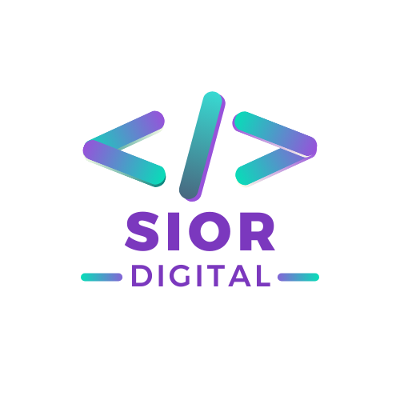
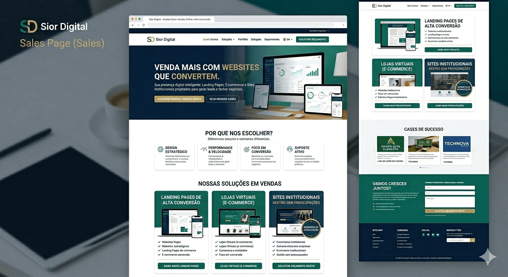
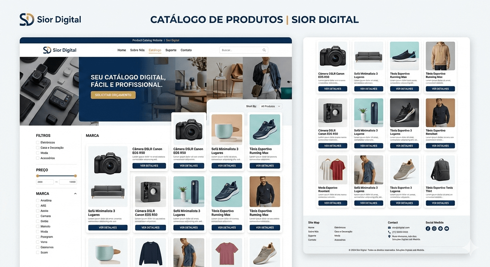
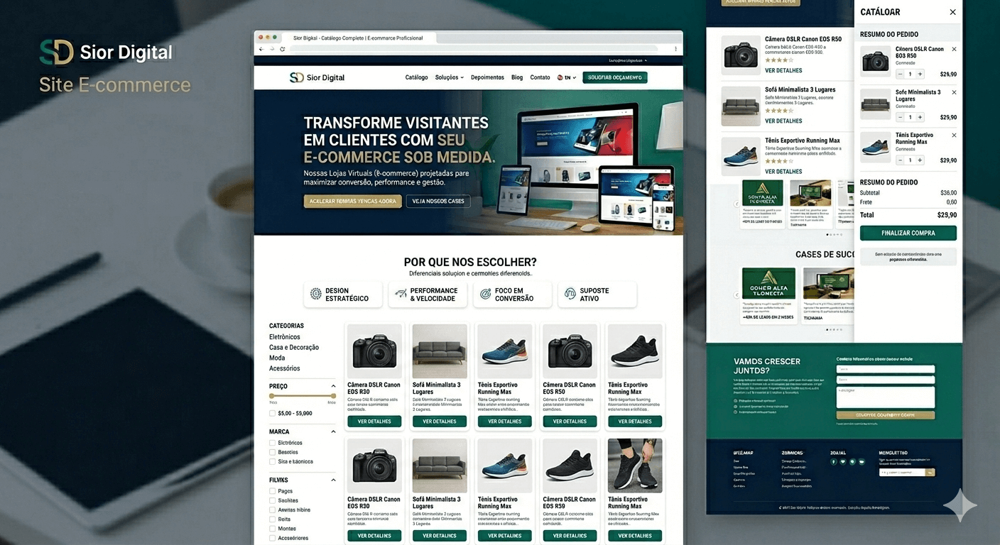
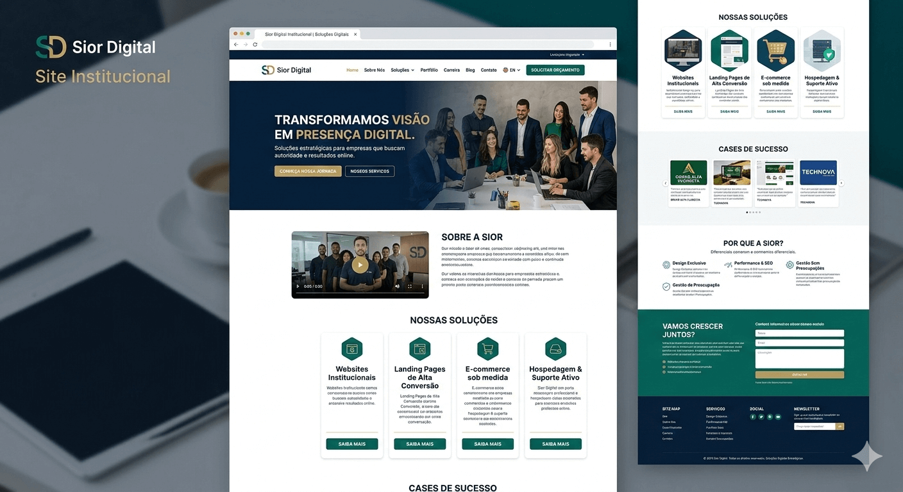
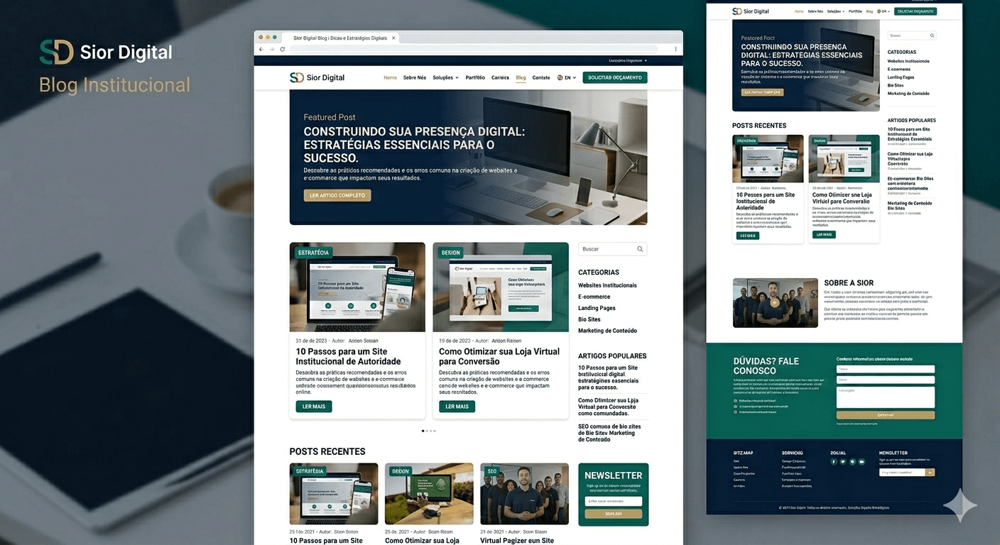
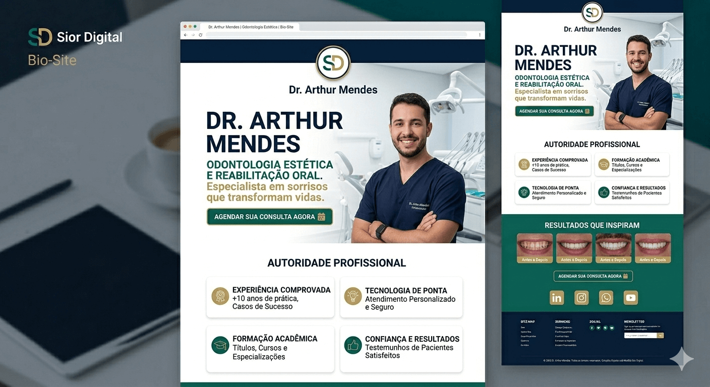

Enquanto você adia sua presença digital, seu concorrente está fechando os negócios que deveriam ser seus. Pare de perder vendas por falta de uma estrutura profissional.

Sem um site oficial, sua empresa parece menor do que realmente é. Dê o próximo passo e transmita a autoridade que o seu negócio merece com uma plataforma de alto nível.
Depender apenas de redes sociais ou indicações limita seu crescimento. Tenha um ecossistema digital que trabalha por você e gera leads qualificados de forma automática.

Uma página única focada em uma única ação (conversão).

Uma vitrine digital organizada, profissionaliza a apresentação dos seus produtos e facilita a consulta de preços e especificações pelos clientes.

Uma plataforma completa de vendas 24h/dia com gestão de estoque, pagamentos e frete.

Presença digital sólida para empresas que querem autoridade no mercado.

Estrutura otimizada para conteúdo, SEO e crescimento orgânico.

Ideal para profissionais que desejam fortalecer sua marca pessoal.
Trabalhamos em soluções pensadas para quem não aceita ser apenas 'mais um' na internet.
Esqueça a dor de cabeça de editar o site. Nós cuidamos de todas as pequenas atualizações para você durante o ano todo. Seu foco é o seu negócio; a parte técnica é nossa.
Sites que demoram a carregar perdem vendas. Desenvolvemos estruturas leves e otimizadas para que seu cliente tenha uma experiência instantânea, seja no celular ou no computador.
Sua estrutura já nasce preparada para os motores de busca. Configuramos os elementos essenciais para que sua empresa tenha muito mais chances de aparecer nas primeiras páginas.
Ao contrário de quem entrega o projeto e some, a Sior Digital acompanha o crescimento da sua empresa. Somos o seu braço direito digital para ajustes, melhorias e consultoria.
O que você vai conquistar ao fazer parte do nosso ecossistema
Esqueça a curva de aprendizado ou o medo de "quebrar" o seu site. Na Sior, nós cuidamos da parte técnica, atualizações de segurança e pequenos ajustes de conteúdo para você. Você foca no seu faturamento, nós cuidamos da sua estrutura.
Não entregamos apenas "sites bonitos". Nossas soluções são otimizadas para carregamento ultra-rápido e conversão. Cada elemento é posicionado estrategicamente para guiar o seu visitante até o botão de compra ou orçamento.
Se o seu cliente te procura no Google e não te encontra, ele está comprando do seu concorrente. Nós construímos a sua "vitrine de luxo" na internet, garantindo que sua primeira impressão seja de uma empresa líder de mercado.
Seu site funcionará perfeitamente em qualquer tela: do smartphone ao desktop. Garantimos uma experiência de navegação intuitiva que retém o usuário e facilita o contato imediato via WhatsApp ou formulário.
Um site amador afasta grandes clientes. Com o design exclusivo da Sior, sua marca ganha a robustez necessária para fechar contratos maiores e se posicionar como referência no seu nicho de atuação.
Ao contrário de freelancers que somem após a entrega, a Sior é sua parceira anual. Seu site não fica estagnado; ele acompanha a evolução do seu negócio com suporte ativo para ajustes e melhorias contínuas.
Tire suas dúvidas sobre nossos serviços e produtos
O prazo varia conforme a complexidade. Uma Landing Page pode ser entregue em 7 dias, enquanto um E-commerce estruturado pode levar de 30 a 45 dias. Prezamos pela agilidade sem abrir mão dos testes de qualidade.
"Eu vou precisar aprender a mexer no site ou contratar alguém para atualizar as informações?"
De forma alguma. Nosso foco é que você cuide do seu negócio enquanto nós cuidamos da sua tecnologia. Todos os nossos projetos já incluem 1 ano de Suporte de Atualização para pequenos ajustes.
Precisa mudar um telefone, trocar uma foto de banner ou atualizar um horário de funcionamento? É só nos avisar e nós fazemos por você. Sem dor de cabeça, sem códigos e sem você precisar gastar seu tempo precioso com edição.
Com certeza! Aplicamos as melhores práticas de SEO On-Page (títulos, tags e velocidade) para garantir que sua estrutura seja "amigável" aos motores de busca já nos primeiros dias.
Esqueça termos técnicos e configurações complexas. Nós cuidamos da hospedagem, segurança e de todas as pequenas atualizações que seu negócio precisar ao longo do ano.